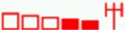
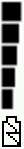

Meaning of Indicator Icon and Graph Position |
The Battery and Signal Meta tags use the 'IconPosition' and 'GraphPosition' parameters to specify the layout of the indicator icon and associated graph. The examples below illustrate all combinations of IconPosition and GraphPosition which can be used to achieve the desired look of the indicator.
For more information on how to use the Signal and Battery indicators please refer to the appropriate help file sections
The following example shows the battery indicator:
<META HTTP-Equiv="Battery" Content="Left:50;Top:50;IconPosition:Left;GraphPosition:Top;Color:#000000; Visibility:Visible">
The following example shows the wireless signal indicator:
<META HTTP-Equiv="Signal" Content="Left:50;Top:50;IconPosition:Left;GraphPosition:Top;Color:#FF0000; Visibility:Visible">

The following example shows the battery indicator:
<META HTTP-Equiv="Battery" Content="Left:50;Top:50;IconPosition:Left;GraphPosition:Bottom;Color:#000000; Visibility:Visible">

The following example shows the wireless signal indicator:
<META HTTP-Equiv="Signal" Content="Left:50;Top:50;IconPosition:Left;GraphPosition:Bottom;Color:#FF0000; Visibility:Visible">
The following example shows the battery indicator:
<META HTTP-Equiv="Battery" Content="Left:50;Top:50;IconPosition:Right;GraphPosition:Top;Color:#000000; Visibility:Visible">
The following example shows the wireless signal indicator:
<META HTTP-Equiv="Signal" Content="Left:50;Top:50;IconPosition:Right;GraphPosition:Top;Color:#FF0000; Visibility:Visible">

The following example shows the battery indicator:
<META HTTP-Equiv="Battery" Content="Left:50;Top:50;IconPosition:Right;GraphPosition:Bottom;Color:#000000; Visibility:Visible">

The following example shows the wireless signal indicator:
<META HTTP-Equiv="Signal" Content="Left:50;Top:50;IconPosition:Right;GraphPosition:Bottom;Color:#FF0000; Visibility:Visible">

The following example shows the battery indicator:
<META HTTP-Equiv="Battery" Content="Left:50;Top:50;IconPosition:Top;GraphPosition:Left;Color:#000000; Visibility:Visible">

The following example shows the wireless signal indicator:
<META HTTP-Equiv="Signal" Content="Left:50;Top:50;IconPosition:Top;GraphPosition:Left;Color:#FF0000; Visibility:Visible">

The following example shows the battery indicator: <META HTTP-Equiv="Battery" Content="Left:50;Top:50;IconPosition:Top;GraphPosition:Right;Color:#000000; Visibility:Visible">
The following example shows the wireless signal indicator:
<META HTTP-Equiv="Signal" Content="Left:50;Top:50;IconPosition:Top;GraphPosition:Right;Color:#FF0000; Visibility:Visible">

The following example shows the battery indicator:
<META HTTP-Equiv="Battery" Content="Left:50;Top:50;IconPosition:Bottom;GraphPosition:Left;Color:#000000; Visibility:Visible">

The following example shows the wireless signal indicator:
<META HTTP-Equiv="Signal" Content="Left:50;Top:50;IconPosition:Bottom;GraphPosition:Left;Color:#FF0000; Visibility:Visible">

The following example shows the battery indicator:
<META HTTP-Equiv="Battery" Content="Left:50;Top:50;IconPosition:Bottom;GraphPosition:Right;Color:#000000; Visibility:Visible">

The following example shows the wireless signal indicator:
<META HTTP-Equiv="Signal" Content="Left:50;Top:50;IconPosition:Bottom;GraphPosition:Right;Color:#FF0000; Visibility:Visible">